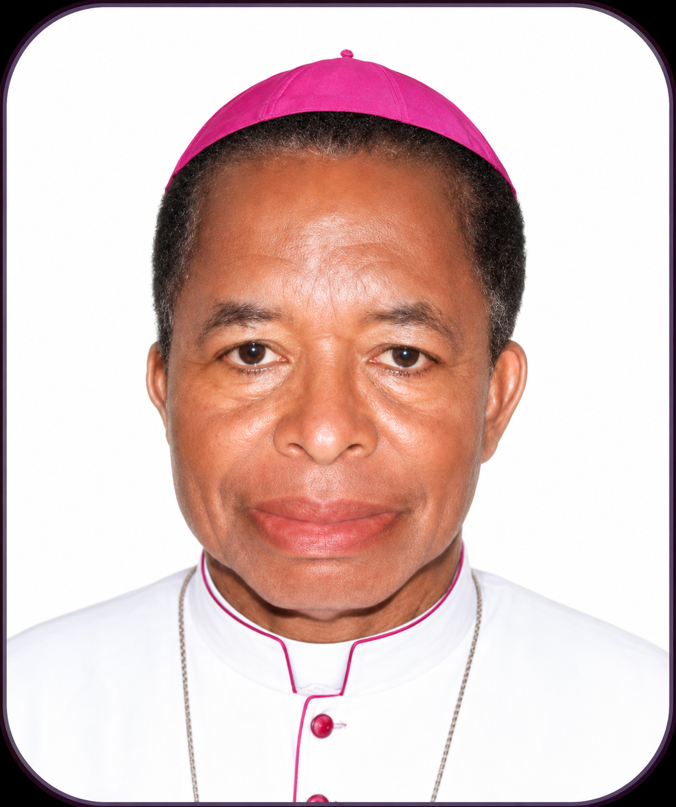

Our Bishop
Meet the shepherd of the Catholic Diocese of Okigwe — his life, ministry, pastoral letters, and messages to the faithful.
Biography of Our Bishop
Most Rev. Dr. Solomon Amanchukwu Amatu was born on 17 January 1950 in Obinagu, Akpu Village, Ukpo, Anambra State, to Mr. and Mrs. Piuss Amatu. Raised in a devout Catholic family, he nurtured his vocation to the priesthood from an early age. He received his priestly formation at Bigard Memorial Seminary, Enugu, and was ordained a deacon on 3 September 1977 by Francis Cardinal Arinze and a priest on 7 October 1978 by Archbishop A. K. Obiefuna.
Following his ordination, Bishop Amatu served the Diocese of Awka in various pastoral and administrative capacities as Assistant Parish Priest, Parish Priest, Secretary, and Chancellor of the Cathedral. Between 1986 and 1990, he pursued higher studies in Rome, obtaining both Licentiate and Doctorate degrees in Canon Law from the Pontifical Lateran University. Upon his return, he continued his distinguished service as Chancellor, Secretary, and later Vicar General II of the Diocese of Awka. In recognition of his dedicated ministry, he was appointed Papal Chamberlain in 1995.
His episcopal ministry began when Pope John Paul II appointed him Auxiliary Bishop of Awka on 22 December 2000. He was consecrated bishop on 28 April 2001. In 2005, he was appointed Coadjutor Bishop of Okigwe Diocese and, in 2006, became the substantive Bishop of Okigwe, a position he continues to hold with remarkable pastoral commitment and wisdom.
As Bishop of Okigwe, he has overseen significant infrastructural and pastoral developments within the Diocese. Among his notable achievements are the construction of the Bishop’s Residence at the Immaculate Conception Cathedral, the completion of the Diocesan Secretariat Complex, the establishment of the Bishop Anthony Okezie Ilonu Memorial Retreat Centre, the construction of a modern home for elderly priests at Ogii, the Okigwe Diocesan Pastoral Centre at Osu, and the building of the Immaculate Conception Cathedral from foundation to roofing.
Bishop Amatu is widely admired for his warmth, humility, sense of humour, and engaging personality. Known for his rich storytelling and love for his native language, he has endeared himself to clergy and laity alike. Beyond his pastoral responsibilities, he enjoys table tennis, basketball, and playing the organ. His life remains a shining example of faithful service, visionary leadership, and unwavering dedication to the growth of the Church.
Past Bishops
The men who built the foundations of faith in our Diocese.

1st Bishop · 1981–2006
Most Rev. Anthony Okezie Ilonu
Pioneer Bishop of Okigwe Diocese